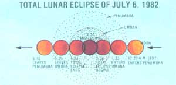

What will you be doing on July 6 and December 30 this year? We suggest you plan to be outdoors in the early morning hours, and-if the weather's clear-you'll see a "heavenly" sight!
A partially eclipsed moon (note notch missing from the sphere's lower right edge) poised over the Grand Tetons. . . . A total lunar eclipse.
PHOTOS BY STEVE ALBERS AND DENNIS MILON
Fred Schaaf
Not just once, but twice during the second half of this year, North American stargazers will be treated to an amazing natural phenomenon. In the early morning hours of those special days, the full moon will slowly become obscured by the shadow of the earth, and-as the lunar eclipse becomes total-a deeper night will fall over the already darkened sky.
On July 6 and December 30, viewers can follow a curved dark stain as it moves steadily across the surface of the moon, causing the orb to take on a luminous, coppery glow (and the surrounding stars to seem brighter). Many Americans haven't had a chance to witness a total lunar eclipse since 1975 . . . although some westerners did see one on September 6, 1979. (At that time the moon set too soon for people on the eastern seaboard to enjoy the event.)
This year, however, should be a real treat for moon watchers. While the United States is scheduled to have clear views of two lunars in the coming months, the Eastern Hemisphere has already experienced one, in January. Furthermore, 1982's eclipses will be of unusually long duration: The winter event will keep the moon in total phase for a respectable 61 minutes, and the July eclipse will be total for an incredible 106 minutes!
THE STAGE IS SET . . .
Of course, eclipses of the moon are not nearly as dramatic as are total solar eclipses, but the lunar events do have an eerie, intriguing quality that makes them among the loveliest sights in the heavens . . . and they're occurrences that have had important places in history, as well. Many ancient peoples were terrified by the unusual and sudden discoloration (or disappearance) of the full moon, and Columbus is said to have used his foreknowledge of a lunar eclipse to awe the natives of the New World. Furthermore, Ben Franklin was so anxious to observe one of the astronomical oddities-even though it occurred during very inclement weather-that in the process he discovered the rotary motion of hurricanes!
Most folks now, of course, understand that lunar eclipses take place when the earth's shadow falls over the full moon as our planet comes between that satellite and the sun. Why, then-you might well ask- isn't there a total eclipse every month during that lunar phase? Well, our satellite's orbital path is tilted in respect to the plane of the earth and sun, so-in most months-the moon passes slightly north or south of the earth's shadow, escaping full coverage.
As you may know, the earth's shadow (like many other shadows) is actually composed of two parts: a dark central region called the umbra (Latin for "shadow") and an outer fringe portion called the penumbra (" almost a shadow"). Their passage over the face of the moon causes the eclipse to progress in three phases. Let's follow the sequence of events that'll make up the summer eclipse in order to see those separate stages in action.
AND THE SHOW BEGINS
On July 6 the moon will move into the earth's penumbra at about 12:22 a.m. Eastern Daylight Time. By 1:00 a.m. EDT, the shadow should be visible, but only as a slight darkening near the moon's left (east) edge. The first truly exciting moment of the eclipse, however, takes place at 1:33 a.m. EDT. At that point, observers will begin to see a very distinct dark stain on the left side of the celestial body, which signals the beginning of the partial phase (stage one) of the event . . . when the moon enters the umbra.
If you watch the movement of this shadow with binoculars or a small telescope, you can see whole craters and mountains being engulfed by the moving wave of darkness. But naked-eye observation will reveal something equally intriguing: You'll be able to notice that the edge of the umbra is curved. This phenomenon, naturally, proves that the earth is truly round (just in case you had any doubts!). When you watch a partial lunar eclipse, then, you're seeing the shape of the world on which you stand, projected onto a rocky "screen" a quarter of a million miles away!
As more and more of the moon's mass is shrouded in umbral shade, you'll soon become aware of the effect that the eclipse has on the surrounding sky. If clouds are scarce and you're not in the midst of a large city, you'll likely notice that crowds of "new" stars are appearing, while the commonly seen constellations seem to be brighter than usual ... all thanks to the absence of that overpowering lunar luminance.
A SIGHT TO SEE
When the umbra has almost fully covered the moon, the sphere will glow dimly with a ruddy, copper-colored light. At 2:38 a.m. EDT, total eclipse will begin (stage two) as the entire lunar face is covered by the umbra. Although the sight of a reddish moon is indeed a beautiful one, it also confuses many people. If the solid mass of the earth is preventing sunlight from reaching the moon, such folks reason, how can our lunar satellite continue to shine?
The answer to that question becomes obvious if we imagine ourselves standing on the moon during this phase of the eclipse. From that vantage point, we'd see the huge, dark disk of earth move into sight and then-as it completely hid the far more distant sphere of the sun-become encircled by a stunning ring of light . . . which is the sun shining through the earth's atmosphere. The same phenomenon produces the moon-glow we see during an eclipse. Because the light has to pass through the earth's atmosphere, to the moon, and back through the atmosphere to our eyes, its short wavelengths are almost completely scattered . . . leaving only the longer red wavelengths of light visible.
Equally fascinating, however, is the fact that the sunlight would never reach the lunar surface if it traveled in a straight line (and was blocked by the earth). Instead, the wavelengths are refracted (bent) by our atmosphere and focused into the earthly umbra.
THE TOUCH OF TOTALITY
Finally, the climax of the eclipse approaches. The midpoint of totality in the morning hours of July 6 will occur at 3:31 a.m. EDT. As the sphere passes through the center-or darkest part-of the umbra, viewers can expect to see a completely altered satellite, ranging in color from orange copper to rose to deep blood red.
The moon's position in the umbra is not the only factor determining its hue during eclipse, though. Also contributing is the weather along the area of earth experiencing dawn or dusk as the eclipse progresses . . . since that twilight is projected, through our planet's atmosphere, directly onto the lunar surface. Therefore, eclipses that occur when that ring of earth is especially cloudy will be darker than normal . . . and can be remarkably so if, for example, the upper atmosphere happens to be full of volcanic ash from a recent eruption.
Neither of the 1982 lunar eclipses is expected to be exceptionally dark . . . but each one will surely display a dazzling array of hues during its course (the longer July event promises to be especially spectacular). Furthermore, lunar eclipses typically proceed slowly enough to allow an artist or photographer to record the changes in detail. And the colorful happenings are worth preserving. Besides the various shades of red common to such events, other hues-including sea green and gold-are frequently seen on the lunar face. And a particular weather disturbance, such as a large storm front, in a twilight region of earth will often cause a spot of special color to appear on the eclipsed moon.
When the total phase of the July 6 eclipse finally draws to a close (at 4:24 a.m. EDT, when hints of dawn will be appearing along the East Coast), the sequence will begin to reverse: Partial eclipse (stage three), as the moon moves out of the umbra, proceeds until the orb's west (right) edge is free of the shadow's dark stain. For viewers in the eastern states, that won't take place until almost sunrise . . . but people watching on the West Coast will be able to see this partial phase end while the moon is still well above the horizon in a dark sky.
From that point on, our satellite will be moving through the penumbra, and the "fringe" shadow should last be visible on the lunar face around 4:00 a.m. Mountain Daylight Time. Finally, the moon will completely leave the penumbral region at 4:40 a.m. MDT, signaling the end of the eclipse.
SET YOUR ALARM
The timetable of stages for both the July and December eclipses is presented in the accompanying chart. You should note that the totalities for both these events will end when the moon is low over the horizon-and thus dimmed by morning light-for eastern viewers, while the moon will still be favorably placed in darkness over the mid-western and western states as it leaves the earth's umbra. Therefore, eclipse watchers will have to either stay up quite late the night of July 5 (or December 29) or rise very early (he morning of July 6 (or December 30) to witness the spectacle.
Most amateur astronomers are willing to make that sort of sacrifice, but if you need a little extra incentive, remember that there'll be a long "drought" of total lunars after December. In fact, if you fail to see one of the eclipses in 1982, you won't get a similar chance-at least in the United States-until near the end of the decade! So don't miss that rare and beautiful hour when the fair face of the moon is shadowed and rose-tinted ... you'll be glad you gave up your comfortable bed for it.
EDITOR'S NOTE: Many of our readers will remember the overview of the night skies of winter, spring, summer, and fall-written by author Fred Schaaf-which appeared in THE Mother Earth News (restricted) Household Hints Almanac. Mr. Schaaf has also written a book about naked-eye observation of the sky that will be published by Dover Publications later this year . . . ask your bookseller to let you know when it's available.
|
 |
|
|